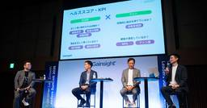

MarkeZine:新着一覧
https://markezine.jp/
翔泳社が運営するマーケター向け専門メディア。MarkeZineはデジタルを中心とした広告・マーケティングに関する情報を多角的な視点で毎日提供します。
フィード


ブロックチェーン＝金融システムではない。Web3データを活かしたマーケティングの新たな可能性を探る
MarkeZine:新着一覧
生活者の購買行動や価値観が変化・多様化する中で、新しい方法を求めるマーケターも多い。今、新たな可能性として注目したいのが「ブロックチェーン」を使ったデータマーケティングだ。一般社団法人ジャパン・コンテンツ・ブロックチェーン・イニシアティブ（JCBI）は2026年9月、国内の先進企業での取り組みを調査したレポート『ブロックチェーンデータのマーケティング活用 日本国内における取り組みと課題』を発表した。一般的には「金融」のイメージが強いブロックチェーンだが、「マーケティング」の観点ではどのような強みがあり、従来手法と何が違うのか。具体的な活用方法をもとに、将来的な可能性や実装時の留意点などを探る。
1日前

日本のマーケターも考えるべき3つの問い【奥谷孝司氏が見たBraze Forge 2026 後編】
MarkeZine:新着一覧
2026年9月28～30日、顧客エンゲージメントプラットフォームを提供するBrazeの年次カンファレンス「Braze Forge 2026」が、ラスベガスで開かれた。現地を訪れたオイシックス株式会社COCO／Engagement Commerce Lab代表の奥谷孝司氏によるレポート後編となる本稿では、米国のベーカリーカフェチェーン「Panera Bread」と、韓国のエンタメ大手CJ ENMが運営するファンアプリの事例を取り上げる。さらに、奥谷氏が現地のCRM担当との会話をとして得た知見を紹介する。
1日前

なぜ花王はホラーゲームを作ったのか？「しずかなおそうじ」で開拓した顧客接点と圧倒的な拡散力の裏側
MarkeZine:新着一覧
生活者のメディア接触行動が変化する中、若年層を中心に従来型のマス広告が機能しづらくなっている。本記事は、MarkeZine Day 2026 Autumnで行われたセッション「なぜ花王は『ゲーム開発』を選んだのか？ホラーゲーム『しずかなおそうじ』で開拓した新たな顧客接点と、戦略の全貌」の様子をレポート。実際の商品が登場するホラーゲームを開発するというアプローチに至った背景と、圧倒的な波及効果を生み出した緻密な戦略設計を、マーケティング・クリエイティブの両視点で紐解いた。
1日前


創業50年超の企業はカスタマーサクセス組織をどう立ち上げた？ パラマウントベッドとプロシップの実践
MarkeZine:新着一覧
医療・介護ベッドを作り続けてきたメーカーと、オンプレミスで大企業の経理を支えてきた固定資産管理システムベンダー。ハードウェアやパッケージ製品で顧客と向き合ってきた2社が、SaaSビジネスへの挑戦を機にカスタマーサクセス組織をゼロから立ち上げた。営業出身メンバーの意識をどう変え、人手に頼る支援の限界をどう乗り越えたのか。Gainsight主催「Customer-Led Growth Leaders Summit 2026」にパラマウントベッドとプロシップが登壇し、各社の軌跡を語った。本稿ではその内容をレポートする。
1日前


分断された施策を「一本のストーリー」へ。事業成果につなげるオリコムの「統合メディアプランニング」
MarkeZine:新着一覧
デジタル広告の獲得効率が頭打ちになり、「施策をやり尽くしたが手応えがない」「本当の課題が見えない」と悩むマーケターは少なくない。その背景にあるのが、専門分化や縦割りによる「施策の分断」だ。本記事では、オリコムの統合メディアプランニング部で部長を務める豊田哲也氏と、営業局を統括する金井文隆氏に取材。施策の分断を解消し、生活者の意識変容から逆算してクリエイティブとメディアをつなぐ「統合メディアプランニング」の実践プロセスに迫る。
2日前
ツルハグループが描くリテールメディアとAI活用の未来とは？【5,600超店舗の顧客接点をどう生かす】 1
1
MarkeZine:新着一覧
リテールメディアの環境整備が進む一方で、集まったデータや顧客接点を、実際の顧客体験にどう還元するかが次の課題になっている。MarkeZine Day 2026 Autumnでは、ツルハグループのデータ基盤構築とDX戦略を牽引する大﨑洋平氏が登壇。同社を支援するアドインテの丸山陽平氏を聞き手に、AI活用、OMO、「ライフストア」構想まで、ツルハグループが目指すリテールメディアと顧客体験のあり方を語った。
2日前
成果を出す企業に学ぶBraze活用4つの型【奥谷孝司氏が見たBraze Forge 2026 前編】
MarkeZine:新着一覧
2026年9月28～30日、顧客エンゲージメントプラットフォームを提供するBrazeの年次カンファレンス「Braze Forge 2026」が、ラスベガスで開かれた。テーマは「Made for This（この時のために）」。AIの急速な普及に不安を感じるマーケターに向けて、「あなたたちは、すでにこの時のための経験とスキルを持っている」と伝えるメッセージだ。その内容を、現地を訪れたオイシックス株式会社COCO／Engagement Commerce Lab代表の奥谷孝司氏によるレポートでご紹介したい。前編となる本稿では、2025年と比較したプロダクトの3つの進化および、アワード受賞企業から見る「成果を出すBraze活用4つの型」をお届けする。
2日前

「その他」の流入で片づけない。ECの集客チャネルを正しく評価し改善につなげる方法
MarkeZine:新着一覧
広告やメルマガ、LINEの数字は細かく追っていても、自然検索やSNSの通常投稿、AI経由、QRコード、Directといった流入は「その他」としてまとめて見ていないでしょうか。連載第13回では、PALAの兒嶋仁視氏が、7つのチャネル・流入経路の発生要因と役割を整理し、それぞれをどう評価して次の打ち手につなげるかを解説します。
2日前

スポーツの「観客」がいなくなる日。ファンの熱狂に加わるブランドの新しい「参加資格」
MarkeZine:新着一覧
「試合を観るだけ」のスポーツの観客は、少しずつ姿を消し始めている――？ 国内でも“兆し”があるマーケティングの新たな潮流に、業界で先進するブランドはどう向き合っているのだろうか？ 本連載では、世界で100ヵ国以上にオフィスを展開する広告代理店HAVASで日本のエグゼクティブ・ディレクターを担う北市卓史氏が、同社が持つ専門研究チームとそのネットワークを活かし、世界各国の先進的なブランドによる取り組み事例を紹介。今後国内でも注目すべきマーケティングトレンドを共有していく。今回着目するのは、拡大を続けるスポーツ市場で起きている、ファンとスポーツの関係の変化。「観る人」から「つくる人」へと変わりつつあるファンに、ブランドはどう関わるべきかを事例とともに解説する。
2日前


NURO 光の契約意向142％増！主要CTVのホームスクリーン横断で行動を促すTeadsの体験設計
MarkeZine:新着一覧
生活者のメディア接触が多様化・複雑化し、従来の広告プランニングの見直しが求められる中、認知獲得から比較検討までを促進する有力な打ち手として、注目を集めているのがCTV（コネクテッドTV）広告だ。ソニーネットワークコミュニケーションズは、光回線サービス「NURO 光」において主要3大CTVのホームスクリーンを横断するキャンペーンを展開。Teads Japan（以下、Teads）との協業により、認知拡大にとどまらずWeb申し込みという実行動へ直結させた。本記事では両社のキーパーソンに取材し、取り組みの成功要因と成果を紐解く。
3日前

経済番組を狙い撃ちで問い合わせが1.5倍に！スタートアップが選んだ「テレ東広告」を活用した認知戦略
MarkeZine:新着一覧
「ガイアの夜明け」「カンブリア宮殿」など、経済、ビジネス系コンテンツに強みのあるテレビ東京。そのテレビ東京が運営する広告取引プラットフォーム「テレ東広告」のTVerCMで経済番組の視聴者を狙い撃ちし、問い合わせを最大約1.5倍に伸ばしたBtoBスタートアップがある。広告のリーガルチェックをAIで自動化する「TRUSQUETTA」を提供する株式会社トラスクエタだ。同社はなぜ、テレビCMではなくTVerCMを選んだのか。限られた予算で認知を広げたいBtoB企業に向けて、テレ東広告の特長とともに、出稿の経緯と成果を紹介する。
3日前

AI時代のデータ基盤に求められる要件とは？博報堂「生活者DATA PLATFORM」構想の最新展開
MarkeZine:新着一覧
AI技術の進化により、施策の「同質化」が新たな課題となっている。MarkeZine Day 2026 Autumnの博報堂ＤＹホールディングスによるセッションでは、この課題へのアプローチが示された。博報堂のフィロソフィーである「生活者発想」とAIを組み合わせることで、顧客理解やマーケティング手法はどのように広がるのか。本稿では、同セッションの様子をレポートする。
3日前

クーポン利用2.1倍「イオンお買物アプリ」がパーソナライズで変える顧客体験【アサヒビール事例も】
MarkeZine:新着一覧
小売業界においてデジタルとリアルの融合が急務となる中、イオンリテールは公式アプリ「イオンお買物アプリ」を進化させている。単なる「レジ前のクーポンアプリ」から脱却し、約1,500万人の会員データとAIを掛け合わせた高度なパーソナライズを実現している。「MarkeZine Day 2026 Autumn」に、イオンリテールのリテールメディア推進部 部長の田中香織氏が登壇し、同社の顧客体験向上の取り組みをアサヒビール事例とともに語った。
3日前
入院率半減、1,000人が歩行開始──ＳＯＭＰＯひまわり生命が実践する「健康増進×LTV向上」のCX
MarkeZine:新着一覧
契約の瞬間が接点のピークになりがちな「保険」という商材において、今までの当たり前を覆し、「日常に寄り添うパートナー」へと顧客体験（CX）を再定義したＳＯＭＰＯひまわり生命保険。一過性の関係から脱却し、いかにして顧客の行動変容を引き出し、LTV向上を両立させているのか。2026年9月開催の「MarkeZine Day 2026 Autumn」における、同社の山下陽氏と佐野清貴氏の講演から、データ分析とAI活用によるCX変革の舞台裏をレポートする。
3日前